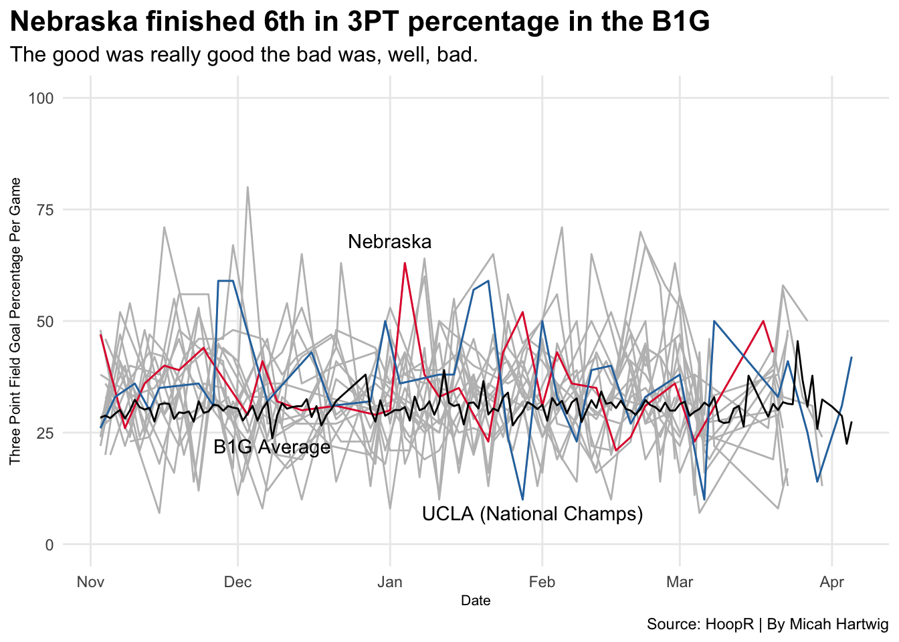
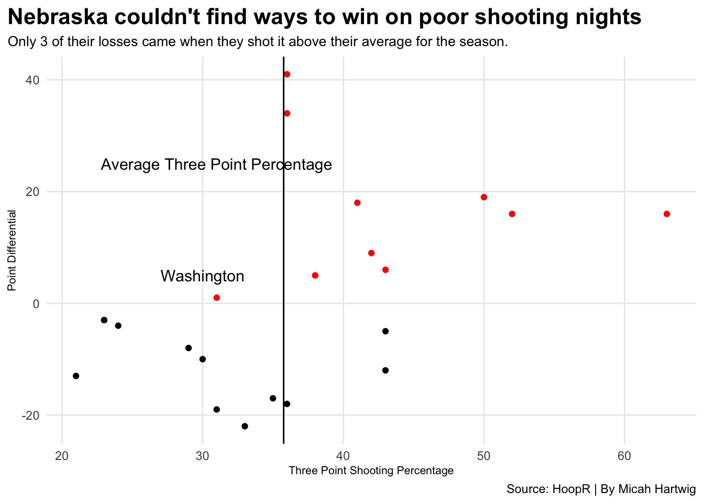

Nebraska women’s basketball had the sixth-best 3-point percentage in the Big Ten last year and the 18th-best in the country. Despite their success from beyond the arc, the Huskers barely squeaked into the tournament as an 11 seed, playing in a First Four game, while finishing 12th in the Big Ten standings.
In the modern era of college basketball, the 3-point shot has become an increasingly important factor in teams’ success. On the flip side, every team has off shooting nights. Good teams win games when they shoot it well. Great teams find other ways to win when they aren’t.
It’s no secret that Nebraska’s roster was constructed with players that could shoot it at a high clip from the three-point line. Britt Prince and Logan Nissley were among the best shooters in the country. But the Huskers struggled against ranked opponents. They went 0-9 against teams ranked in the AP Top 25, and they recorded only one win against a Big Ten team that finished higher than them in the conference standings.
Many factors contribute to wins and losses. Including turnovers, defensive efficiency, rebounding, and points in the paint. But shooting it well from the 3-point range can make many of those things easier.
That brings up the question. Could Nebraska win games when they didn’t shoot it well, and how often did they lose when they did?
The first thing we’ll look at is how Nebraska compared to the rest of the Big Ten throughout the season from beyond the arc.
Nebraska’s three-point percentage consistently stayed well above the Big Ten average and compared well with that of eventual national champions, UCLA.
Focus on Nebraska’s percentage from early to late February. Their record during that time? 0-6.
Code
library(tidyverse)library(wehoop)library(ggrepel)library(patchwork)teamboxscores <-load_wbb_team_box(seasons =2026)nu <- teamboxscores |>filter( team_short_display_name =="Nebraska") ucla <- teamboxscores |>filter( team_short_display_name =="UCLA")average <- teamboxscores |>group_by(game_date) |>summarise(mean_shooting=mean(three_point_field_goal_pct))bigteams <-c("Nebraska", "Iowa", "Minnesota", "Illinois", "Northwestern", "Wisconsin", "Michigan", "Michigan", "Michigan St", "Ohio State", "Indiana", "Purdue", "Penn State", "Rutgers", "Maryland", "UCLA", "USC", "Washington", "Oregon")big <- teamboxscores |>filter(team_short_display_name %in% bigteams)ggplot() +geom_line(data=big, aes(x=game_date, y=three_point_field_goal_pct, group=team_short_display_name), color="grey") +geom_line(data=nu, aes(x=game_date, y=three_point_field_goal_pct), color="#E41C38") +geom_line(data=ucla, aes(x=game_date, y=three_point_field_goal_pct), color="#2774AE") +geom_line(data=average, aes(x=game_date, y=mean_shooting), color="black") +scale_y_continuous(limits =c(0, 100)) +annotate("text", x=(as.Date("2026-01-01")), y=68, label="Nebraska") +annotate("text", x=(as.Date("2026-01-30")), y=7, label="UCLA (National Champs)") +annotate("text", x=(as.Date("2025-12-08")), y=22, label="B1G Average") +labs(x="Date", y="Three Point Field Goal Percentage Per Game", title="Nebraska finished 6th in 3PT percentage in the B1G", subtitle="The good was really good the bad was, well, bad. ", caption="Source: HoopR | By Micah Hartwig" ) +theme_minimal() +theme(plot.title.position ="plot",plot.title =element_text(size =16, face ="bold"),axis.title =element_text(size =8), plot.subtitle =element_text(size=12), panel.grid.minor =element_blank() )

Let’s take a look at how Nebraska scored. In games they won, they averaged 27.9 points per game from three. In games they lost? 20.7. Let’s call that a seven-point difference, essentially a three-possession game.
Nebraska lost five games against Power Four opponents by less than seven points.
Take a look at their game against Washington. Nebraska only hit 5 threes, but they won. If you happened to watch that game, you would know that they won on a game-winning buzzer-beating three from Britt Prince. This was also their only win against a team that finished higher than them in the Big Ten Standings.
The Huskers’ total points from three might not be a fair measure to judge their success by itself. Let’s look at their three-point percentage and how it translated to the game’s point differential.
Nebraska shot 35.7% from three last year. The Huskers won only one game when they shot below that mark. Take a guess who that might’ve been against. (HINT: Britt Prince is a big-time player)
Code
teamboxscores <-load_wbb_team_box(seasons =2026)PointDiff <- teamboxscores |>mutate(point_differential = team_score - opponent_team_score) |>filter(team_short_display_name =="Nebraska") p4opponents <-c("Creighton", "Iowa", "Northwestern", "Minnesota", "Wisconsin", "Illinois", "Indiana", "Purdue", "Michigan", "Michigan State", "Ohio State", "Penn State", "Rutgers", "Maryland", "Oregon", "Washington", "USC", "UCLA", "Richmond","Virginia", "Baylor")opponents <- PointDiff |>filter(opponent_team_short_display_name %in% p4opponents) |>mutate(opponent_date =paste(opponent_team_short_display_name, game_date)) |>select(team_winner, opponent_date, three_point_field_goal_pct, point_differential)Wins <- opponents |>filter(team_winner =="TRUE") |>filter()Losses <- opponents |>filter(team_winner =="FALSE") |>select(team_winner, opponent_date, three_point_field_goal_pct, point_differential)set.seed(1234)ggplot() +geom_point(data=Losses, aes(x=three_point_field_goal_pct, y=point_differential), color="Black") +geom_point(data=Wins, aes(x= three_point_field_goal_pct, y=point_differential), color="red") +annotate("rect", fill ="black", alpha =2, xmin =35.7, xmax =35.8,ymin =-Inf, ymax =Inf) +geom_text(aes(x=31, y=25, label="Average Three Point Percentage"), size=4) +geom_text(aes(x=30, y=5, label="Washington"), size=4) +labs(title="Nebraska couldn't find ways to win on poor shooting nights",subtitle="Only 3 of their losses came when they shot it above their average for the season.",x="Three Point Shooting Percentage",y="Point Differential",caption ="Source: HoopR | By Micah Hartwig") +theme_minimal() +theme(plot.title.position ="plot",plot.title =element_text(size =16, face ="bold"),axis.title =element_text(size =8), plot.subtitle =element_text(size=10), panel.grid.minor =element_blank() )

Nebraska did lose three games when they shot above 35%, so no, a good shooting night does not guarantee a win. However, when the Huskers shot the ball well, they were more likely to find success.
It seems as if Nebraska was a “good” team last season, but needs to improve in other areas of their game in the 2026-2027 season to become a “great” one.